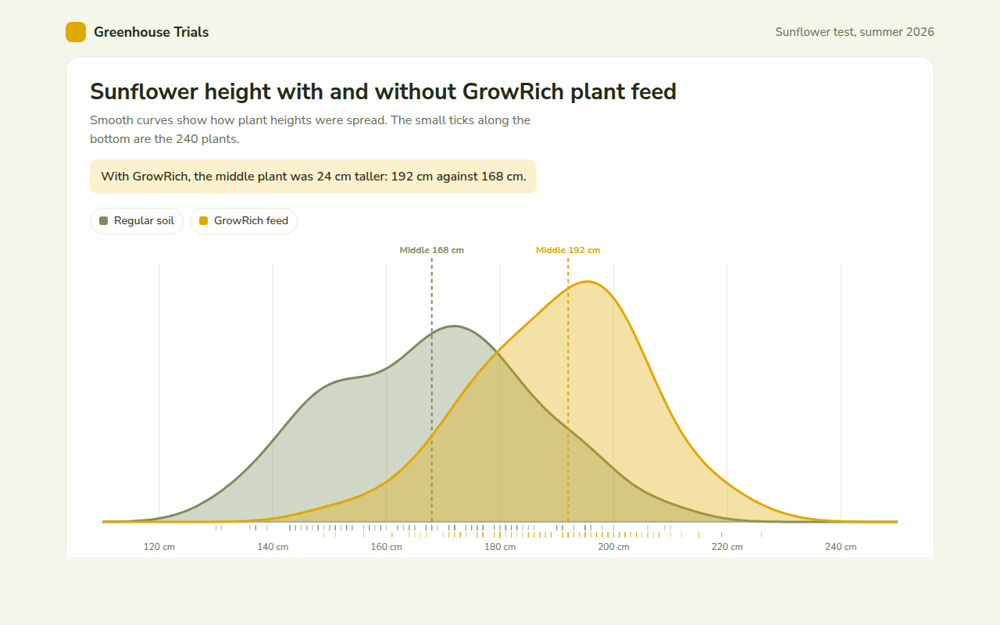
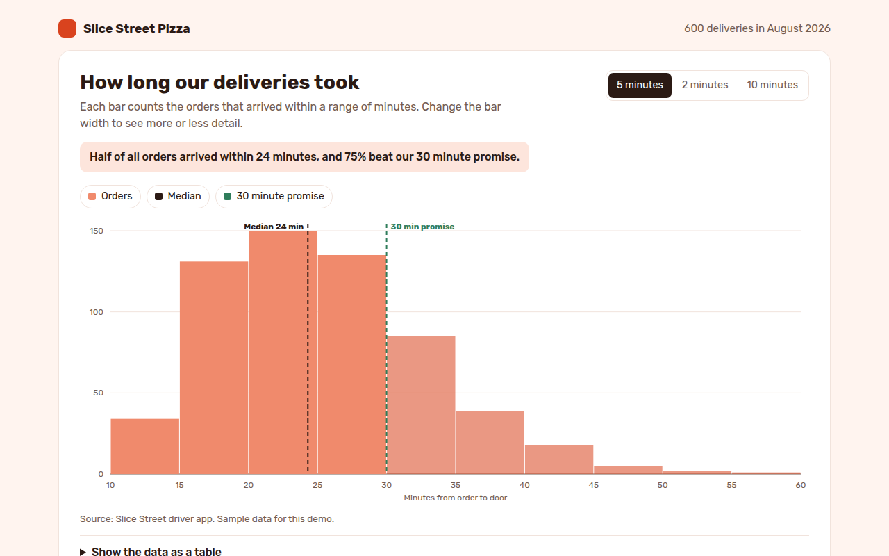
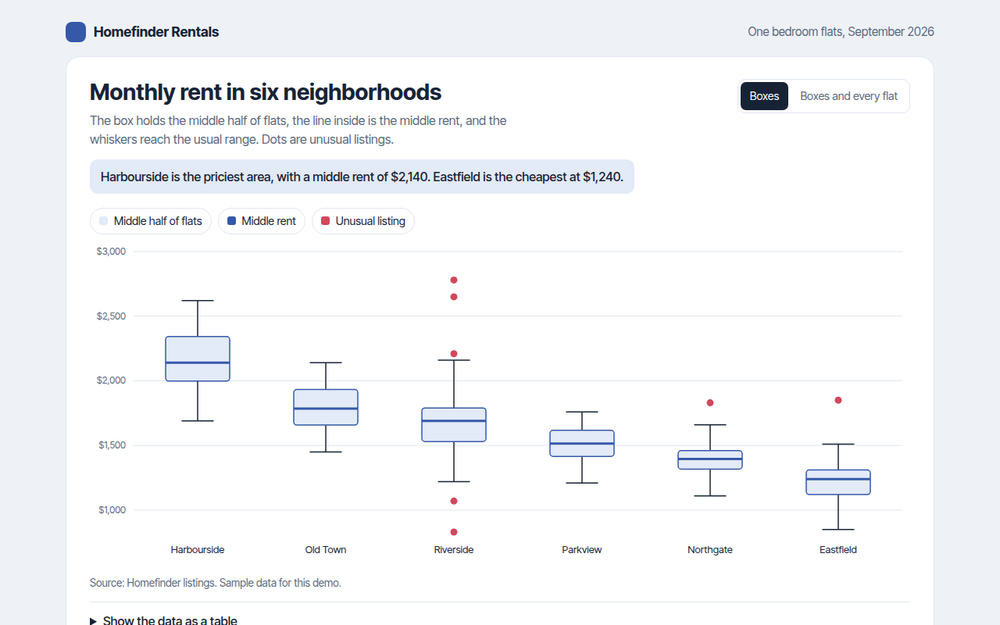
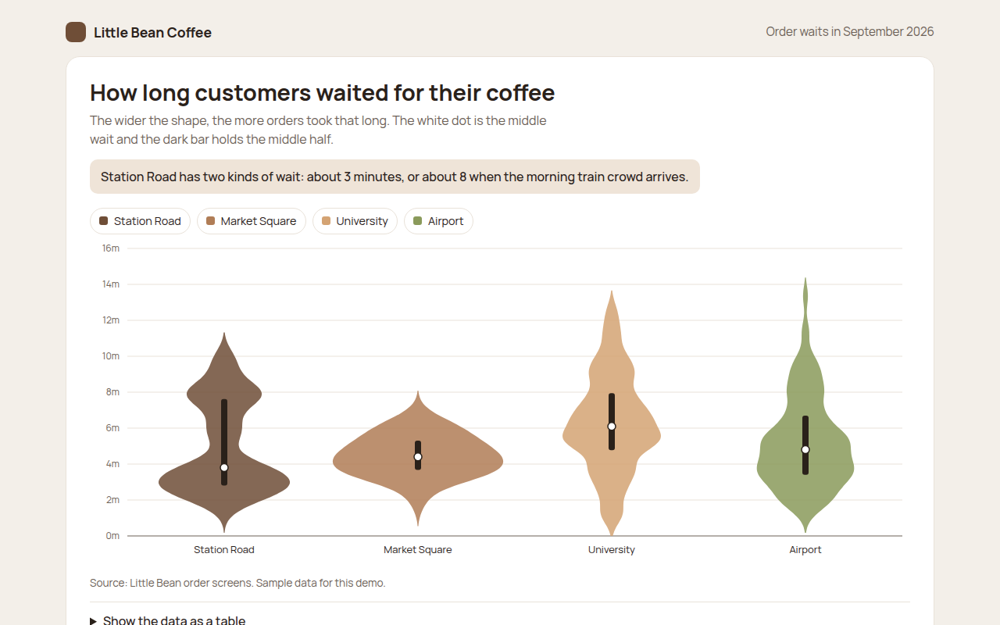
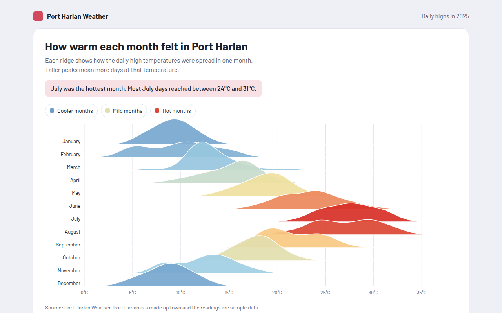
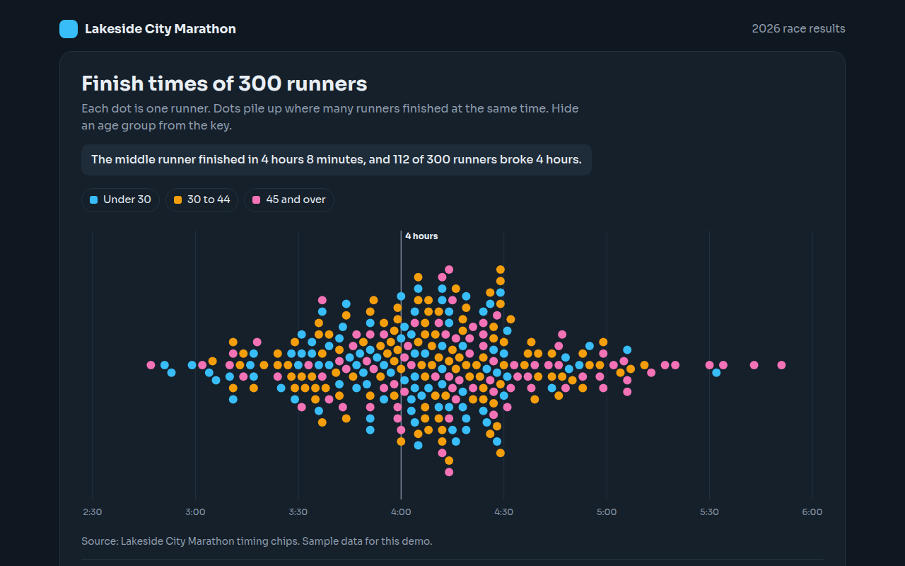
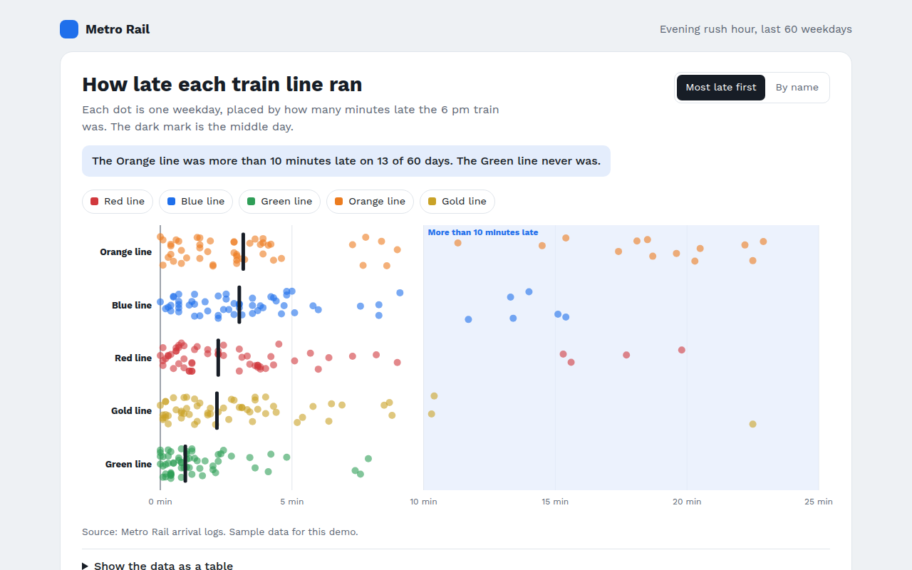
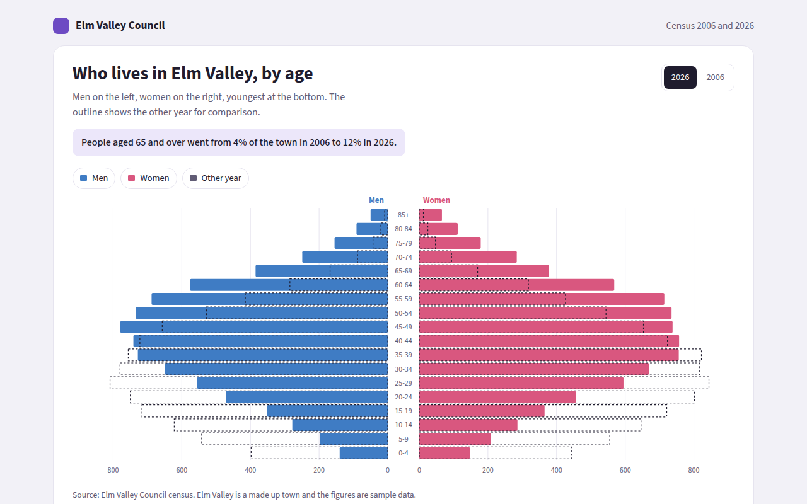
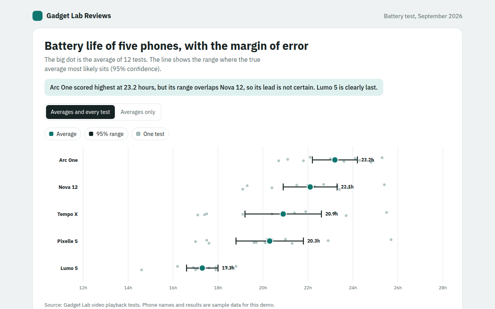
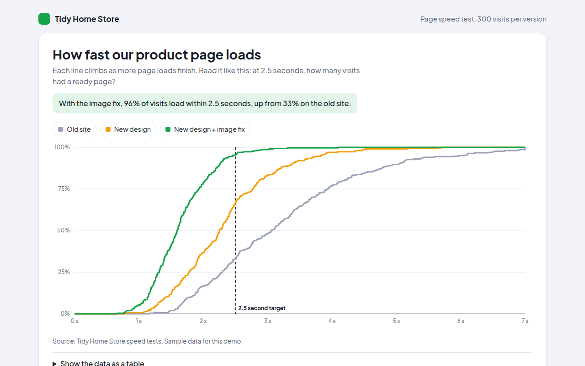

Home / Distribution / Density Plot
Density Plot in HTML, CSS and JavaScript
A density plot is a smooth curve that shows how a set of numbers is spread out. This free template draws one with plain SVG and vanilla JavaScript, no chart library. The example shows sunflower heights with and without plant feed.

What is a density plot?
A density plot is a smooth curve that shows how a set of numbers is spread out. It is like a histogram without the steps, which makes it easy to lay two groups on top of each other and compare them.
The higher the curve, the more values sit at that point. In this example, the whole GrowRich curve sits to the right, which shows that fed plants grew taller across the board, not just on average.
At a glance
- Best for
- Comparing the spread of two or three groups
- Data you need
- A list of numbers for each group
- Skip it when
- Very small data sets. The curve can mislead.
- Made with
- HTML, CSS and vanilla JavaScript. No library.
When to use a density plot
- Test results before and after a change
- Heights, weights or sizes of two groups
- Prices from two sellers
- Times for two versions of a process
When to pick another chart
- Histogram: you only have one group and want exact counts
- Ridgeline Plot: you have many groups to compare
What you get in this template
- Two smooth curves made with a density estimate in plain JavaScript
- See through fills so both shapes stay visible
- Dashed median lines with labels
- Small ticks along the bottom for every single plant
- A crosshair that tells you what share of each group is taller than a height
- Arrow key support and a data table
How the code works
Here is a short version of the idea behind this density plot. The full file adds the axis, labels, tooltips, sorting and resizing on top of it.
const heights = [162, 171, 158, 180, 167, 175, 149, 169, 184, 166];
const bw = 7;
const xs = Array.from({ length: 80 }, (v, i) => 120 + i * 100 / 79);
const density = xs.map(x => heights.reduce((a, h) => a + Math.exp(-0.5 * ((x - h) / bw) ** 2), 0));
const max = Math.max(...density);
const pts = xs.map((x, i) => ((x - 120) * 5.6 + 20) + ',' + (280 - density[i] / max * 240));
make('path', { d: 'M20,280L' + pts.join('L') + 'L580,280Z', fill: '#e0a800', 'fill-opacity': 0.35 });
make('path', { d: 'M' + pts.join('L'), fill: 'none', stroke: '#e0a800', 'stroke-width': 3 });The example uses four tiny helpers that create SVG shapes. Put them above the code and it runs as is.
const svg = document.querySelector('svg');
function make(tag, attrs) {
const n = document.createElementNS('http://www.w3.org/2000/svg', tag);
for (const k in attrs) n.setAttribute(k, attrs[k]);
svg.appendChild(n);
return n;
}
function drawRect(x, y, width, height, fill) { return make('rect', { x, y, width, height, fill }); }
function drawCircle(cx, cy, r, fill) { return make('circle', { cx, cy, r, fill }); }
function drawLine(x1, y1, x2, y2, stroke, width, dash) {
return make('line', { x1, y1, x2, y2, stroke, 'stroke-width': width || 1, 'stroke-dasharray': dash || 'none' });
}
function drawText(x, y, str, anchor) {
const t = make('text', { x, y, 'text-anchor': anchor || 'start' });
t.textContent = str;
return t;
}How to add it to your website
- Download the file. Click Download HTML file above. You get one file called density-plot.html with everything inside.
- Change the data. Open the file in any code editor and find the DATA list near the bottom. Replace the names and numbers with your own.
- Change the colors and text. Colors are at the top of the style tag. The title, subtitle and main point are plain HTML near the top of the body.
- Put it online. Upload the file to any host, such as GitHub Pages, Netlify or your own server, or paste it into your site. There is no build step.
Questions people ask
What is a density plot?
A density plot is a smooth curve that shows where values are common and where they are rare. It is a smooth version of a histogram.
What does the y axis mean on a density plot?
It shows density, not a count. What matters is the shape and height compared with other points, which is why many density plots hide the y axis, like this one.
How smooth should a density curve be?
That depends on the bandwidth. A small bandwidth follows every bump, a large one smooths everything away. Pick one that shows the real shape without noise.
Density plot or histogram?
Use a histogram when people need exact counts. Use a density plot when you want to compare the shape of two or three groups on one chart.
More distribution

031. Histogram
Example: delivery times for 600 pizza orders
032. Box Plot
Example: monthly rent for flats in six neighborhoods
033. Violin Plot
Example: coffee order waits at four cafes
035. Ridgeline Plot
Example: daily high temperatures for each month of the year
036. Beeswarm Plot
Example: finish times for 300 marathon runners
037. Strip Plot
Example: train delays on five lines over 60 weekdays
038. Population Pyramid
Example: the age of a town in 2006 and 2026
039. Error Bar Chart
Example: battery life test results for five phones